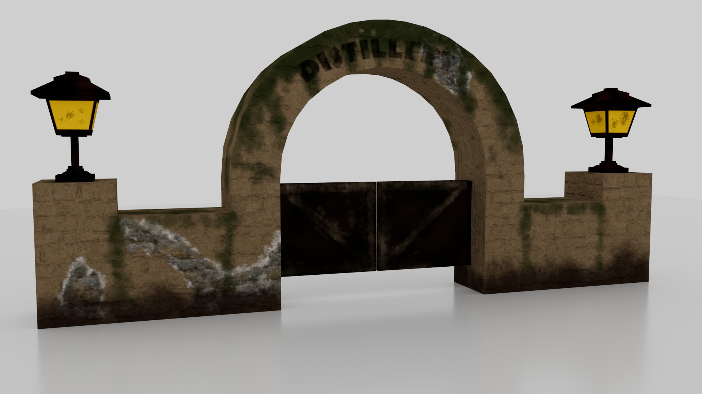
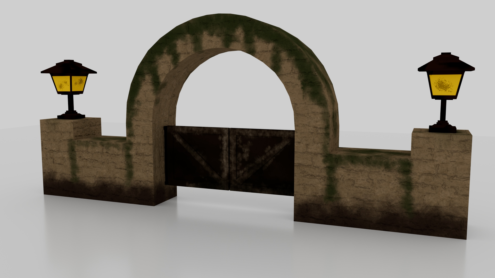

3D MODELING
Gate & Building Models
Maya & Adobe Substance Painter
In my 3D modeling class (DIG4780), we are currently developing models to populate an island area. First, we
modeled and textured a Gate that leads into a building on the island. Next, we modeled that building, and soon we will
be texturing it and creating even more models!
This course has built in me the foundations for artistic
modeling and texturing.You can view these models more closely on my SketchFab Page!

Gate Model (Front)

Gate Model (Back)

Building Model (Front)

Building Model (Back)
DIGITAL VIDEO
Club Penguin Homepage Evolution
Adobe Premiere Pro
Our final DIG2030 project handed us a lot of creative freedom, so I decided to do a retrospective
of Club Penguin's homepage and how it changed over time! Club Penguin, a popular online game owned by
Disney, evolved a lot in its 2005-2017 lifespan, so I decided to take a look at how its homepage specifically
changed during that timeframe!
This 10-minute involved a heavy amount of research, script-writing, filming, recording, and editing. Research was
done by looking at the Wayback Machine's archive of Club Penguin's old homepage versions, and it took a long time
to note all 12 years of changes. In addition to all of this, I sought out stock music, images, and sound effects that
fit the tone of the video. It was a lot of work, but I am very proud of this project!
"A Subtle Spoon" (Video Mashup)
Adobe Premiere Pro
This video project was simply a mashup of other videos. The topic could be about anything we wanted,
but we were given a sample title generator to use. After I generated the title "A Simple Spoon," I searched
the internet for free stock footage involving spoons, and gathered music to fit.
The message that I wanted this video to convey was that so many facets of art and endearing moments of life
occur with a spoon around. Whether it's a child stirring cookie dough for the first time, a husband trying a
soup that his wife is cooking, an artistic display of painted easter eggs, a wood carving, et cetera, these moments
all contain a subtly present spoon.
DIGITAL IMAGING
Composite Images
Adobe Photoshop
For this Photoshop project, we were instructed to create 3 composite images. A composite image
is simply one image comprised of many images edited together. I used many Photoshop tools such as
smart objects, layer masks, shadow FX, and more to create these fun composite images!
My personal favorite image out of all of these is the Grimace action figure brushing his teeth, which is
actually the first one I developed. I attempted to mimic the style of Lego Star Wars boxart with the second image, and
just got very creative at my local Olive Garden with the last image.


Vector Pop-Art Poster
Adobe Photoshop
For this DIG2109 project, we were instructed to create a pop-art inspired poster using scalable
vector graphics. I chose to create a poster of one of my favorite underrated video game characters,
Klonoa!
I traced the 3D model of Klonoa to create a vector version of him, then added his iconic Air Board and
a cartoony logo. I enjoyed doing this project and I think it turned out very well!
 - Copy.jpg)